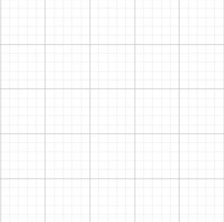

A
Jenis transformasi
Translasi / Pergeseran
Sorang anak yang sedang berada di bawah pohon ingin berjalan pulang ke rumahnya. Klik tombol jalan agar anak bisa pulang ke rumahnya.
Jalan


Saat siswa sampai ke rumah,
???
anak bergeser dari bawah pohon ke rumahnya. Peristiwa tersebut merupakan
pergeseran dari bawah pohon ke rumah.
Posisi
Ukuran
Pengertian Traslasi atau pergeseran dalam matematika yakni:
Translasi adalah proses memindahkan posisi objek tanpa mengubah ukuran dan tanpa memutar objeknya
Translasi
Bukan Translasi

Arah dan Jarak Translasi
Arah objek yang ditranslasikan bisa ke kanan, kiri, atas, dan bawah
Sedangkan jarak objek yang ditranslasikan dilihat dari seberapa jauh objek berpindah. Untuk mengetahui jaraknya, translasi dilakukan di bidang kartesius
Perhatikan contoh berikut!
Titik tersebut berpindah dari kordinat ( 2 , 1 ) ke kordinat ( 2 , -1 ).
Perpindahan tersebut berjarak 2 satuan kearah bawah.
Contoh lainnya!
Titik tersebut berpindah dari kordinat ( 0 , -1 ) ke kordinat ( 3 , -1 ).
Perpindahan tersebut berjarak 3 satuan kearah kanan.
Contoh berikutnya!
Titik tersebut berpindah dari kordinat ( 3 , 1 ) ke kordinat ( 2 , -2 ).
Perpindahan tersebut berjarak 1 satuan kearah kiri., dan 3 satuan kearah bawah.
Arah dan jarak perpindahan contoh terakhir bisa disingkat dengan menuliskan
Bagian pertama menandakan arah horizontal ( kiri / kanan ).
JIka bernilai positif maka ke kanan, jika bernilai negatif maka ke kiri.
Bagian kedua menandakan arah vertikal ( atas / bawah ).
JIka bernilai positif maka ke atas, jika bernilai negatif maka ke bawah.
Tes Pemahaman
TES PERTAMA
Titik A ditranslasikan sejauh
. Tentukan jarak dan arah yang sesuai!
1 satuan kearah kiri
4 satuan kearah atas
4 satuan kearah kanan
1 satuan kearah bawah
4 satuan kearah kiri
1 satuan kearah atas
1 satuan kearah kanan
4 satuan kearah bawah
TES KEDUA
Terdapat titik A ( -3 , -2 ). Jika titik A ditranslasikan sejauh
. Tentukan kordinat titik A'
Klik pada kordinat untuk memunculkan titik lalu cek jawabanmu pada tombol "Check"
Translasi Bangun Datar
Bangun datar umumnya memiliki sisi-sisi, sudut- sudut, dan titik sudut.
Saat melakukan transformasi pada bangun datar, semua titik sudutnya akan melakukan perpindahan yang sama mengakibatkan bentuk bangun datar tetap sama.
Contoh pada translasi, jika suatu bangun datar ditranslasikan maka setiap titik sudut bangun datar akan berpindah dengan arah jarak sama.
Segitiga ABC dengan kordinat A ( -4 , 1 ), B ( -3 , -2 ), dan C ( -1 , 1 ) yang akan ditranslasikan sejauh
A
B
C
B'
A'
C'
Diketahui:
Jarak dan arah translasinya adalah 4 satuan kearah kanan dan 1 satuan kearah atas
Diperoleh:
Segitiga A'B'C' dengan kordinat A' ( 0 , 2 ), B' ( 1 , -1 ), C' ( 3 , 2 )
Tes Pemahaman
TES KETIGA
Terdapat segitiga ABC. Jika segitiga ABC ditranslasikan sejauh
, tentukan kordinat segitiga A'B'C'
A
B
C
Pindahkan titik-titik sudut segitiga hijau hingga membentuk kordinat segitiga A'B'C'